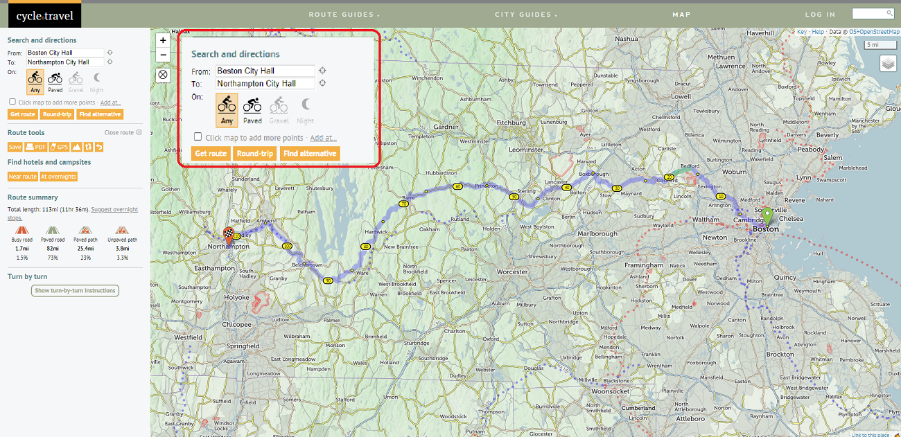

Trip Planning Resources
How do I plan my rides? Use this page to find out!
I first started getting into planning my bike rides beyond just - “Enter start and end points on Google Maps and GO!” after my Bos/treal (check it out!!) ride in 2021. Since then, I’ve gathered a list of resources which I have used, and some I haven’t, but come recommended! Note: None of the links are sponsored. I do not get any commission if you click on these links.
To give an overview, the following points are a good gist of what to think of when trip planning. I have detailed each section further down as well. I am always happy to answer any questions you may have, and offer help, advice, and suggestions AT ABSOLUTELY NO MONETARY COST. I was the recipient of all of this information because of generous help from others, and I wish that you get it at no cost as well!
- Route Planning:
- Tools and Applications
- Distances & Hours
- Terrain
- Rest stops
- Overnight Stops:
- Accommodation types
- Where to find them
- Transportation to/from the ride:
- Rail & Bus
- Car
- Gear & Packing List:
- Tools
- Navigation
- Refreshments
- Clothing
- Personal effects
- Storage
- Bike Transportation
Route Planning:
A lot of thought goes into route planning. This is, after all the main component of the trip! I use multiple free and paid websites and tools to plan a route as thoroughly as possible. A few things I take note of are terrain & road conditions, rest stop locations, points of interest along the way, and sometimes when transportation options are limited, time to & from transportation points. We’ll go through all of these.
Websites and Applications
My route planning arsenal consists of two primary websites:
- RidewithGPS (tiered pricing)
- Google Maps (free)
I also use a website called cycle.travel sometimes. It is just like Google Maps, but directs you along bike friendly routes. I have found their routing suggestions to be better than Google Maps - especially in Europe. However, currently their service is only available in the usual suspects - Europe, North America and Australia-New Zealand. Here, I will discuss only how to use RidewithGPS and Google Maps in tandem, and give a brief overview of Cycle.Travel at the end.
Step 1 - Decide your start and end stops.
This may be affected by your accommodation and transportation choices. Check out those sections for more information on how to plan for this. All these elements are, of course, dependent on each other, and may keep dynamically evolving depending on their availability and scheduling restrictions. Let’s use an example for our planning. Note that certain elements of RidewithGPS require a paid subscription. They offer multiple levels of subscriptions, so I’d recommend looking into what’s important for you before purchasing anything.
Let’s take an example trip from Newburyport MA to Portsmouth, NH. This route is relatively short at 24 miles, so we can do a day trip. As I live in Boston, I first need to find out how can I get to the starting point, and get back home from the end-point.
Getting to the Start Point
I know that there is a train from North Station in Boston to Newburyport. I go online to the MBTA website and navigate to the Newburyport train schedule. It looks like the first train leaves Boston at 5:30 am, and gets to Newburyport at 6:37 am. Perfect. We now know that the earliest we can start biking is at 6:37 am.
Note that, there may be several different ways to get to & from your start point based on where you’re thinking of going. As my personal experiences (on which this resource is built) are in and around Massachusetts, I will focus on those. Other services with bike-friendly transport options from Boston in various directions include Peterpan Buslines (Western MA and Cape Cod), Dartmouth Coach (towards Dartmouth College (Hanover NH) with stops along the way), Concord Coach (extensive service in NH & ME), C&J Buslines (Coastal NH & Tewksbury), Plymouth & Brockton (South Shore MA and Cape Cod), DATTCO (MA South Coast), Megabus (to Burlington VT), and Amtrak (the Downeaster to Portland ME, and Northeast Regional towards NYC allow bikes on some services). Note that some of these services might have limited and/or paid space for bikes that needs to be booked. From personal experience, Peterpan, Dartmouth Coach, Concord Coach have allowed my bike for free without reservations, whereas I had to buy space on Plymouth & Brockton and Amtrak.
The MBTA has a really cool map showing regional transport services in New England on their website. I have saved it here as a PDF as well.
cycle.travel
While cycle.travel is unfortunately geographically limited, for those planning rides in these areas (Europe, North America - excl. Mexico, and Australia-NZ) it is an excellent complementary tool for the above steps. For the following example, let’s look at a bike route from Boston City Hall to Northampton City Hall.
In the initial welcome screen, you can add the start and end points (which can of course be edited later in the planner).
 Initial Route Plan - fill in the From and To sections, and select what kind of surface suggestions you want
In the left panel, in ‘Route Summary’ you can also split the route into multi-day sections. This option comes when the distance of your ride goes beyond 30 miles. You can see the small moon sign indicating overnight stop location. These are of course only suggested locations, and you can move them to a more convenient location in the planner map. Additionally, you can also click on ‘Find Hotels and Campsites’ for suggestions on accommodations.
Overnight Stop Suggestions - It needs a minimum trip distance of 30 miles.